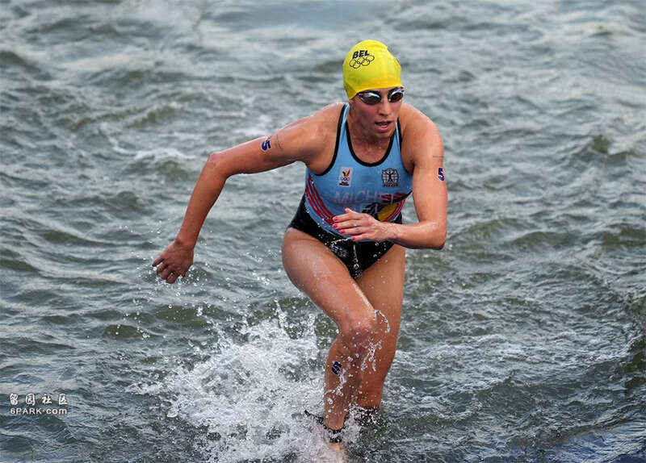
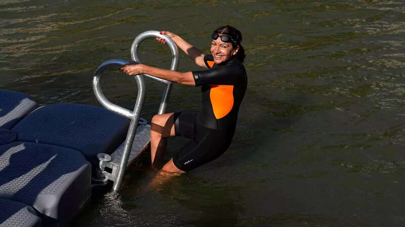

据美国《华盛顿邮报》、法国《队报》等媒体报道，当地时间4日，因一名运动员在参加7月31日的女子铁人三项比赛后病倒，比利时队被迫退出将于5日举行的巴黎奥运会铁人三项混合接力比赛。
比利时奥委会4日在一份声明中宣布了上述决定。比利时官员表示，35岁的铁人三项运动员克莱尔·米歇尔4日前往奥运村的一家医疗诊所就诊，并于当天晚些时候返回房间。米歇尔在此前的女子铁人三项比赛中获得第38名。
法国《队报》透露，米歇尔是因感染大肠杆菌而入院。大肠杆菌是一种肠杆菌科杆菌，常见于人类和动物的肠道中。虽然大多数大肠杆菌菌株无害，但有些菌株会引起严重的腹部绞痛、血性腹泻和呕吐。

当地时间7月31日，比利时选手克莱尔·米歇尔参加巴黎奥运会女子铁人三项比赛。路透社
虽然比利时奥委会未将米歇尔的病情和赛事直接挂钩，但在声明中对赛事组织者提出了严厉质疑。
声明指出，比利时奥委会和铁人三项协会希望下届奥运会的铁人三项比赛能从中吸取教训，“训练日、比赛日和比赛形式都必须提前明确，以确保运动员、随行人员和支持者们不会有任何不确定性”。
当地时间4日深夜，赛事主办方宣布，尽管有几支队伍要求推迟比赛，但铁人三项混合接力比赛将按原计划在5日上午举行。此前，由于塞纳河细菌含量超标，本届奥运会铁人三项比赛的多次赛前训练被取消，男子铁人三项比赛遭到推迟，而女子比赛则照常进行。
在7月31日的女子铁人三项比赛后，同为比利时队的铁人三项运动员维尔梅伦曾表示，在塞纳河中的游泳经历非常“恶劣”。她提到，在游泳过程中咽下了不少河水，很担心这会影响她的健康，“在桥下游泳时，我感受到并看到了一些我们不应该想太多的事情”。
此外，瑞士奥委会4日也宣布，此前在男子铁人三项比赛中获得第49名的阿德里安·布里福德因肠胃道感染无法参赛，将由西蒙·韦斯特曼取代其参加铁人三项混合接力比赛。
负责奥运会铁人三项比赛的世界铁人三项总会和国际奥委会的官员没有立即回应关于相关疾病的评论请求。
由于污染严重和可能致病，塞纳河已禁止游泳超过一世纪，为了备战奥运，法国政府自2016年以来已耗资14亿欧元（约110亿人民币）改善塞纳河的水质。然而，法国国内对塞纳河的治水结果仍质疑不断。本届奥运会开幕前九天，巴黎市长安妮·伊达尔戈亲自跳下塞纳河游泳，向外界展示几年来的河水净化成效。
尽管如此，本届奥运会以来，塞纳河的水质仍然令人担忧。由于7月26日开幕式当天起巴黎连降暴雨，塞纳河水质再度恶化，导致原定于28日至29日举行的铁人三项游泳项目热身环节被迫取消。组委会甚至透露，若水质问题始终无法解决，不排除取消游泳项目，将铁人三项比赛改为两项比赛的可能性。

当地时间7月17日，巴黎市长在塞纳河中游泳。美联社
多名运动员也表达了塞纳河中的大肠杆菌含量的担忧。美国铁人三项女将泰勒·斯皮维在赛前表示，她和很多选手一样，正在增加益生菌的摄入，以促进肠道健康，抵御潜在的疾病。
斯皮维的男队友塞斯·莱德则称，为准备本次比赛，他会故意上完厕所不洗手，以在日常生活中接触一些大肠杆菌，从而提高自己的大肠杆菌耐受。后来，他自称这是开玩笑。
获得男子项目第12名的挪威选手布鲁门费尔特也在赛后表示，下河游泳“就是一场赌博”，“我猜很多运动员其实都不太信任他们给出的检测数字，无论是说干净还是不干净。因为这通常要两天或三天的时间出结果。”
赛事主办方在4日深夜的声明中表示，新的检测结果显示，塞纳河的水质“在最近几个小时有所改善”，预计将达到铁人三项比赛可接受的水平，5日混合接力赛将照常进行。